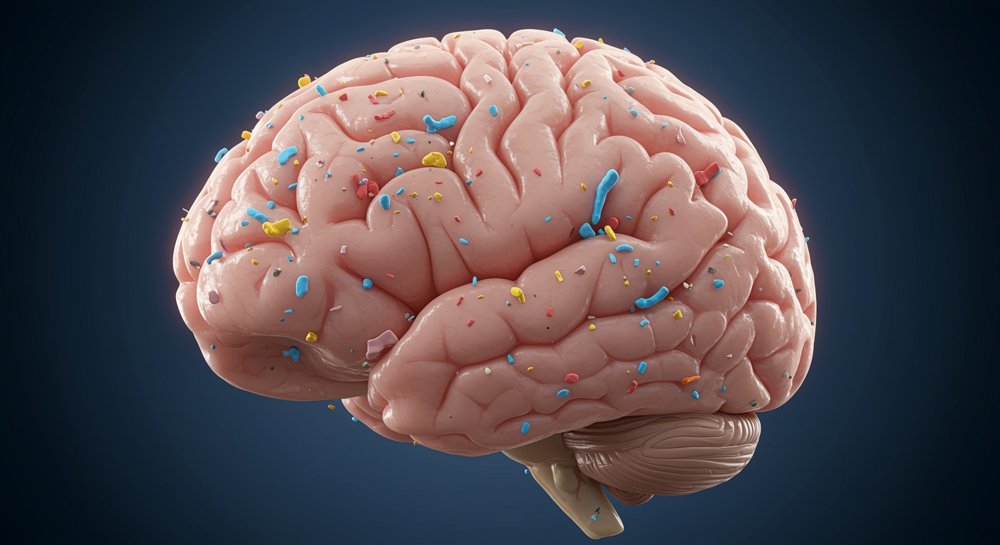
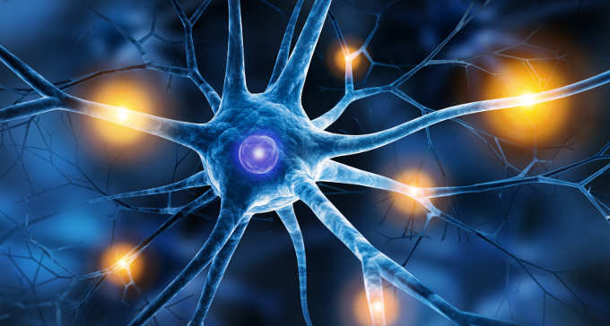

Le nanoplastiche rappresentano una potenziale minaccia per il sistema nervoso centrale. Grazie alle loro dimensioni ridotte, possono superare barriere biologiche che normalmente proteggono il cervello da sostanze tossiche.

Le microplastiche possono raggiungere il cervello tramite:

Una volta nel cervello, le particelle attivano la microglia, che può rimanere in stato di attivazione cronica causando danni ai neuroni.
Le microplastiche generano ROS che provocano: